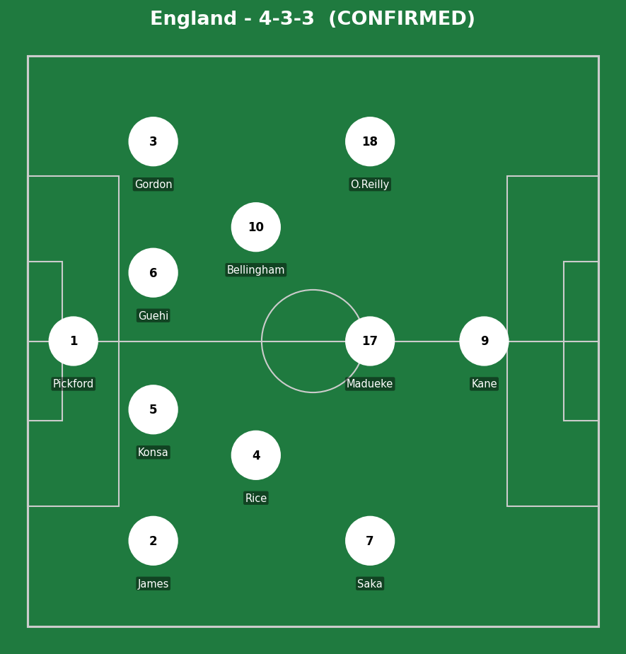
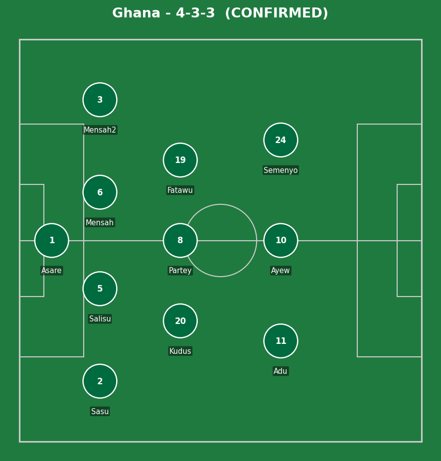
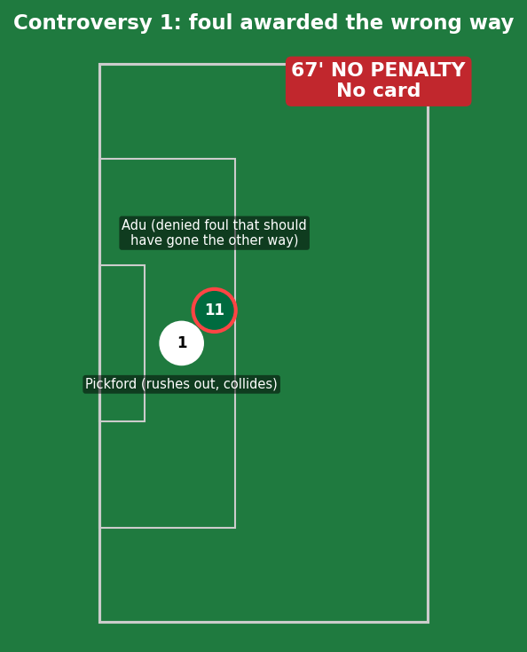
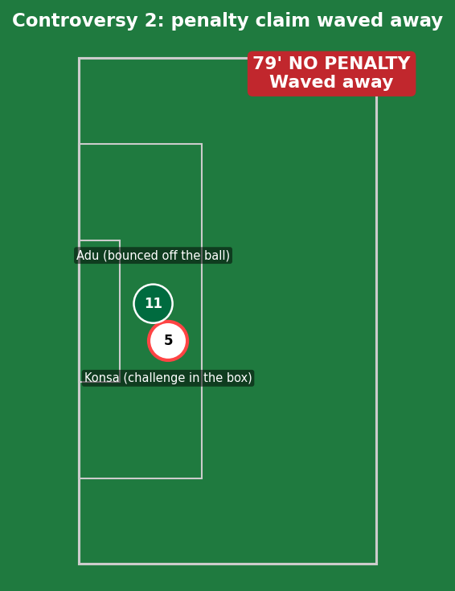
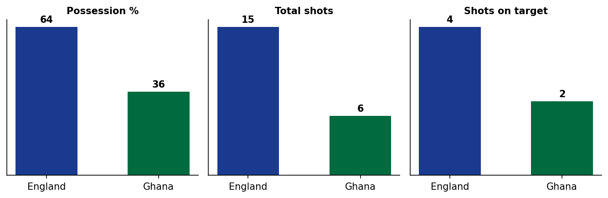
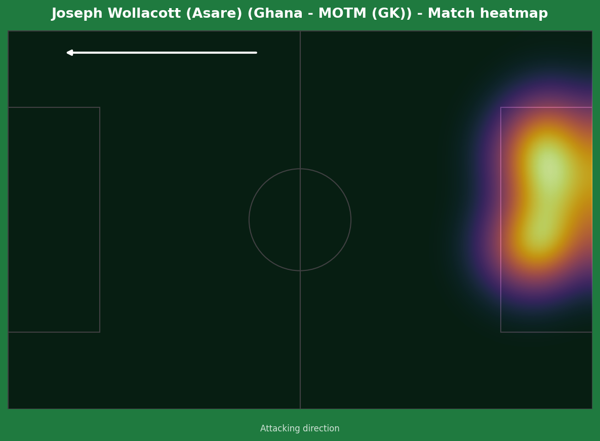
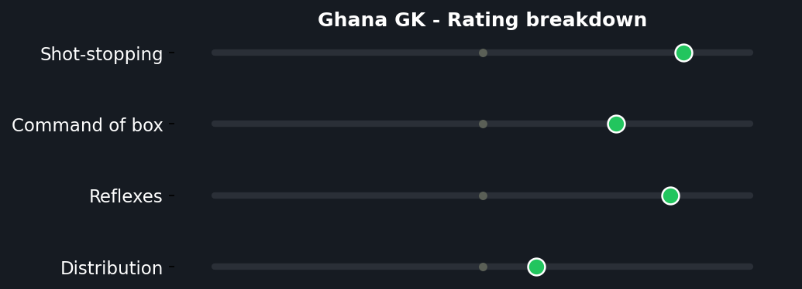

England dominated possession and territory but couldn't break down a well-organized Ghana side, with Harry Kane's late miss (blazing over an open goal after O'Reilly's header bounced off the crossbar) summing up a frustrating night in front of goal. The match will be remembered more for two separate refereeing incidents that both went in England's favor, with Ghana boss Carlos Queiroz furious afterward, joking that "VAR went for a coffee."


England (4-3-3): Pickford; James, Konsa, Guehi, Gordon; Rice, Bellingham; Saka, Madueke, O'Reilly; Kane. Ghana (4-3-3): Asare; Sasu, Salisu, Mensah, Mensah; Kudus, Partey, Fatawu; Adu, Ayew, Semenyo.


England's approach was patient build-up against a deep, disciplined Ghana low block - 64% possession and 15 shots reflects territorial control, but Ghana's organization (and no shortage of fortune) meant clear sight-of-goal moments were rare. Declan Rice's long-range effort and Jude Bellingham's blocked shot were the closest things to real first-half quality.
Ghana's gameplan was exactly what's needed against a stronger opponent - stay compact, deny space, and look to hit on the counter through Adu and Ayew's energy. It worked well enough to secure a point that, combined with their opening win over Panama, leaves them well-placed for qualification regardless of the refereeing controversy.
The key tactical moment was less about formations and more about game management - Ghana's discipline in defending set pieces and crosses (England's strongest avenue per pre-match data) limited the one area where England were statistically most dangerous on Matchday 1.

A 15-6 shot count in England's favor with only a 4-2 gap in shots on target tells the real story - territorial dominance without the cutting edge to actually punish it.


A genuinely composed performance under sustained pressure, including a sharp stop to turn away Saka's snap shot late on with the game still goalless. Combined with a defense that limited England's set-piece threat - their most dangerous avenue from Matchday 1 - this was a complete defensive shutout against a side with significantly more individual quality in the final third.
Illustrative reconstruction based on known event locations, not raw GPS tracking data.
Bellingham - 6.5 (tidy, no real cutting edge)
Kane - 5.0 (glaring late miss)
Rice - 6.5 (controlled tempo)
Pickford - 5.5 (fortunate on the incident)
Asare (GK) - 7.5 ⭐ MOTM (multiple saves)
Adu - 7.0 (denied twice by poor calls)
Partey - 6.5 (disciplined screening)
Ayew - 6.5 (relentless pressing work)
Next: England face Panama, knowing a win secures top spot. Ghana face Croatia in a winner-takes-the-group-edge clash.